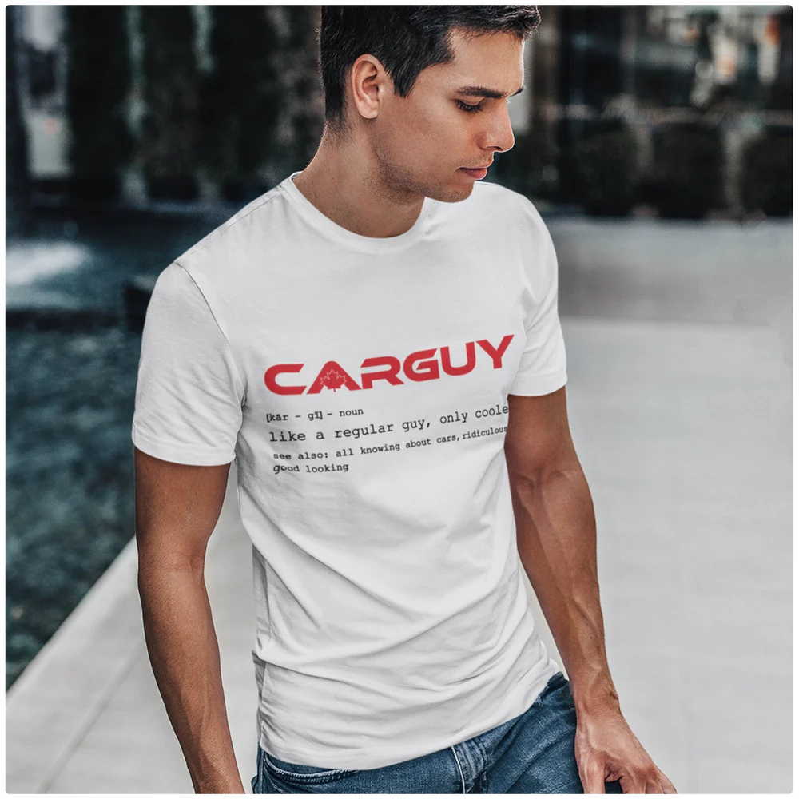

Your Digital Footprint
Posting online can feel harmless and momentary, but it doesn't always stay that way.
Introducing Lucy

Lucy is a college student who is active on social media. Often posting whatever comes to mind, without a second thought.
Lucy plans to update her page, which should she pick?


Result
Privacy Settings
Who should see Lucy's post?
Final Outcome
Lucy's experience is but one example. Your digital footprint can be defined by each post you make, often in unexpected ways.
Final Reflection
Lucy's experience is just one example. Your digital footprint can be defined by each post you make, often in unexpected ways.
Introducing Alex

Alex is someone who posts consistently, and care a lot for attention and engagement. He often post without thinking about the consequences, and sometimes share things that are inappropriate or controversial.
Alex is about to post, what should he share?


What happens next?
Who should see it?
Final Outcome
Final Reflection
Alex's story demonstrates how seeking attention online can have unwanted outcomes. Long after it is shared, a single post can influence how people perceive you.
Introducing Tulse
Tulse works for a large corporation and frequently posts updates about her professional life on the internet. She occasionally shares content without giving it any thought.
Tulse is about to post, what should she share?


What happens next?
Who should see it?
Final Outcome
Final Reflection
One important point is reinforced by Tulse's experience: every post adds to your digital footprint. What you post online, whether for personal or professional purposes, can affect how other people view you, and occasionally the consequences can be worse than expected.